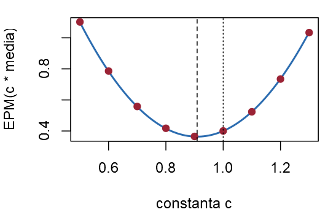
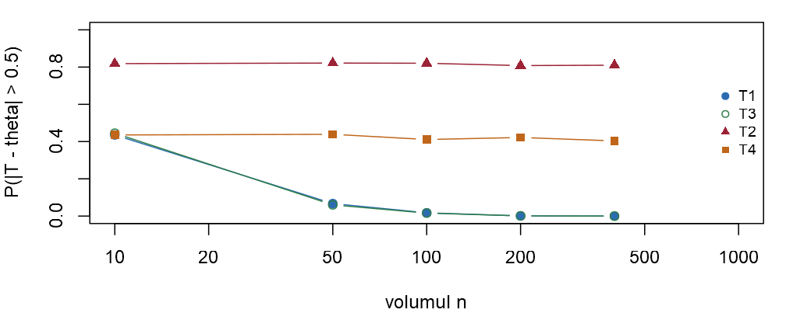
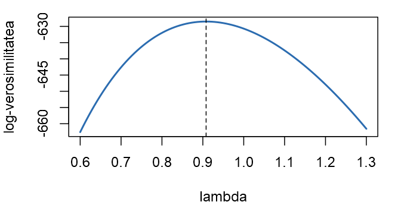
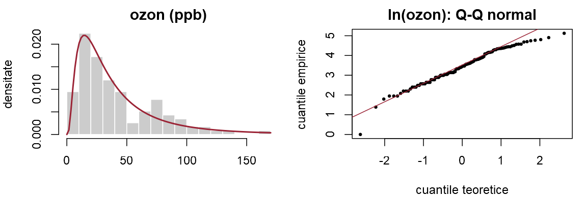
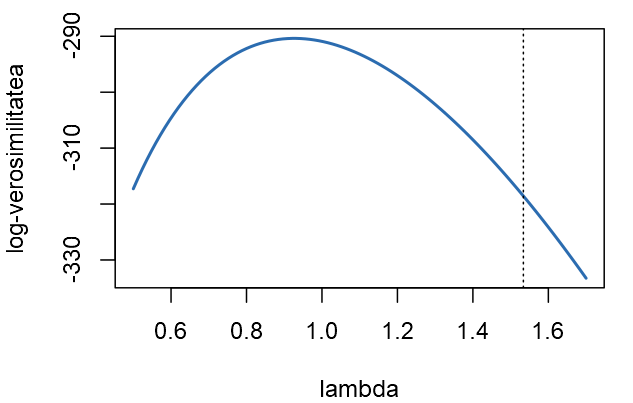
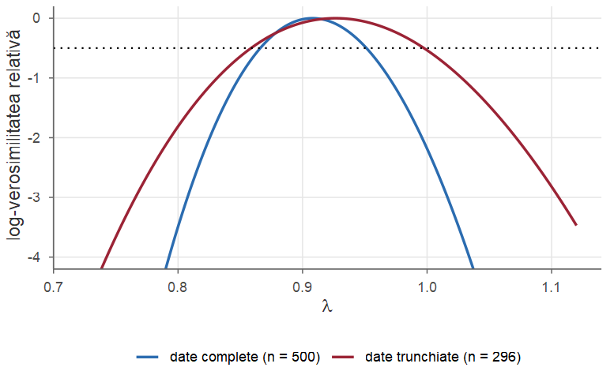
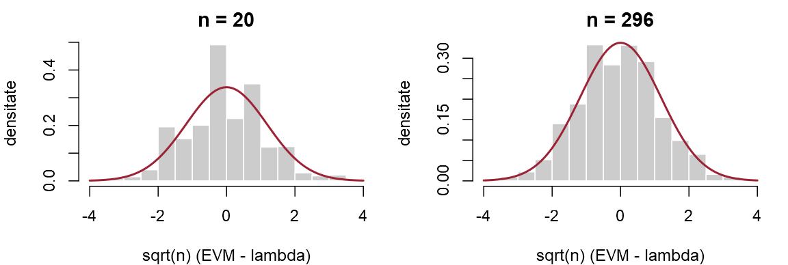
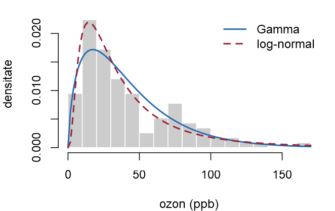

Probabilități și Statistică · Seminarul 10 (seminar și laborator)
Universitatea din București · Facultatea de Matematică și Informatică · 2026–2027
În Cursul 9 am învățat cum judecăm un estimator, iar în Cursul 10 cum îl construim. Astăzi le punem la lucru: simularea studiază acum o regulă de calcul (repetăm de mii de ori „extrage un eșantion, aplică estimatorul”), iar maximul verosimilității se caută numeric.
Fiecare exercițiu: Seminar rezolvarea matematică, apoi Laborator rezolvarea în R.
La sfârșitul ședinței studentul trebuie să poată:
mean, function(x) length(x) * min(x);proprietati(estimator, E, theta): fiecare linie a matricei E este un eșantion; pentru o listă de estimatori: sapply(lista, proprietati, E = E, theta = theta);function(theta) sum(dpois(x, theta, log = TRUE)); graficul ei: curve(sapply(x, loglik), a, b);optimize(loglik, c(a, b), maximum = TRUE) — maximul pe un interval; uniroot(g, c(a, b))$root — rădăcina ecuației \(g(\theta)=0\);optim(par, fn, method = "L-BFGS-B", lower = ..., hessian = TRUE) minimizează (îi dăm \(-\ell\)): $par, $convergence, $hessian; un parametru: method = "Brent";sqrt(diag(solve(fit$hessian))), respectiv 1 / sqrt(J);proprietati, rlaplace, rpois_trunc, evm_trunc.Timpii de răspuns (în secunde) ai unui serviciu web la \(n\) cereri independente, \(X_1,\dots,X_n\), sunt modelați prin repartiția exponențială cu media \(\theta\) necunoscută (adică \(X_i\sim\Exp(\lambda)\), cu \(\lambda=\frac1\theta\)). Pentru estimarea lui \(\theta\) se propun (unde \(c>0\) este o constantă pe care o vom alege) \[ T_1=\Xbar,\qquad T_2=n\,X_{(1)}=n\min(X_1,\dots,X_n),\qquad T_3=c\,\Xbar . \]
proprietati(estimator, E, theta), care estimează prin simulare deplasarea, varianța și EPM ale unui estimator, și verificați (b) și (c).Seminar (a) Suma timpilor este \(20.2\), deci \(T_1=\frac{20.2}{10}=2.02\). Cel mai mic timp este \(0.3\), deci \(T_2=10\cdot0.3=3\), iar \(T_3=\frac{10}{11}\cdot2.02\approx1.84\). Trei reguli, trei estimații diferite. Nu putem spune care este cea mai apropiată de \(\theta\), pentru că \(\theta\) este necunoscut. Putem compara însă regulile (Definiția 1 din Cursul 9): cum se comportă fiecare în medie, dacă am repeta măsurătorile de foarte multe ori.
(b) Pentru repartiția exponențială cu media \(\theta\) avem \(\E[X_i]=\theta\) și \(\Var(X_i)=\theta^2\) (Propoziția 8 din Cursul 5).
Estimatorul \(T_1\). \(\E[\Xbar]=\theta\) (Propoziția 3 din Cursul 9), deci \(\Bias(T_1)=0\); \(\Var(\Xbar)=\frac{\theta^2}{n}\); din Teorema 6 din Cursul 9, \[ \MSE(T_1)=\Var(T_1)+\Bias(T_1)^2=\frac{\theta^2}{n}+0^2=\frac{\theta^2}{n} . \]
Seminar Estimatorul \(T_2\). Minimul depășește \(x\) exact atunci când toți timpii depășesc \(x\), deci, din independență, \[ \PP(X_{(1)}>x)=\prod_{i=1}^n\PP(X_i>x)=\big(e^{-x/\theta}\big)^n=e^{-nx/\theta},\qquad x\ge0 . \] Aceasta este coada unei repartiții exponențiale cu media \(\frac\theta n\) (ca în Exercițiul 7 din Seminarul 5). Atunci \(\PP(nX_{(1)}>x)=\PP\big(X_{(1)}>\frac xn\big)=e^{-x/\theta}\): variabila \(T_2=nX_{(1)}\) are aceeași repartiție exponențială, cu media \(\theta\), ca o singură observație (Exercițiul 2 din Cursul 9). Prin urmare \[ \Bias(T_2)=0,\qquad \Var(T_2)=\theta^2,\qquad \MSE(T_2)=\theta^2 . \] Ambii estimatori sunt nedeplasați, deci eficiența relativă este raportul varianțelor (Definiția 8 din Cursul 9): \(\operatorname{ef}(T_1,T_2)=\frac{\MSE(T_2)}{\MSE(T_1)}=\frac{\theta^2}{\theta^2/n}=n\).
Seminar (c) Din proprietățile mediei și ale varianței, \(\E[c\,\Xbar]=c\,\theta\) și \(\Var(c\,\Xbar)=c^2\,\frac{\theta^2}{n}\), deci \[ \Bias(T_3)=(c-1)\theta,\qquad \MSE(T_3)=\frac{c^2\theta^2}{n}+(c-1)^2\theta^2=\theta^2\Big[\frac{c^2}{n}+(c-1)^2\Big]. \] Paranteza este o funcție de gradul al doilea în \(c\), cu coeficientul lui \(c^2\) pozitiv; minimul ei se află acolo unde derivata se anulează: \[ \frac{2c}{n}+2(c-1)=0\iff c\Big(1+\frac1n\Big)=1\iff c^*=\frac{n}{n+1}, \] iar valoarea minimă a erorii pătratice medii este \[ \MSE(T_3)=\theta^2\Big[\frac{n}{(n+1)^2}+\frac{1}{(n+1)^2}\Big]=\theta^2\,\frac{n+1}{(n+1)^2}=\frac{\theta^2}{n+1}. \]
Seminar Estimatorul optim este \(T_3=\frac{n}{n+1}\Xbar=\frac{X_1+\dots+X_n}{n+1}\). El este deplasat — subestimează, \(\Bias(T_3)=-\frac{\theta}{n+1}\) —, dar are EPM mai mică decât estimatorul nedeplasat \(\Xbar\): \(\frac{\theta^2}{n+1}<\frac{\theta^2}{n}\).
Înmulțirea cu \(c<1\) micșorează varianța cu factorul \(c^2\), iar câștigul este mai mare decât pătratul deplasării introduse: este compromisul deplasare–varianță.
Pentru \(n=10\) și \(\theta=2\) (cu \(c^*=\frac{10}{11}\)): \[ \begin{array}{l|ccc} & T_1=\Xbar & T_2=nX_{(1)} & T_3=\frac{10}{11}\Xbar\\ \hline \text{deplasare} & 0 & 0 & -\frac{2}{11}\approx-0.182\\ \text{varianță} & 0.4 & 4 & \frac{100}{121}\cdot0.4\approx0.331\\ \text{EPM} & 0.4 & 4 & \frac{4}{11}\approx0.364 \end{array} \]
proprietatiLaborator (d) Simulăm \(B\) eșantioane de volum \(n\) și le așezăm pe liniile unei matrice E. Funcția proprietati aplică estimatorul fiecărei linii (apply(E, 1, estimator)), obține astfel \(B\) valori ale estimatorului și calculează media lor minus \(\theta\) (deplasarea), varianța lor și media pătratelor erorilor (EPM).
Argumentul estimator este o funcție: primește un eșantion (un vector) și întoarce un număr. Funcția proprietati va fi folosită în toate exercițiile următoare.
Laborator Estimatorii sunt funcții R păstrate într-o listă cu nume; sapply îi aplică, pe rând, eșantionului de la (a).
#> T1 T2 T3
#> 2.020 3.000 1.836Regăsim estimațiile de la (a): \(2.02\), \(3\) și \(1.84\). Aceeași listă va fi evaluată, mai departe, pe mii de eșantioane simulate.
Laborator \(B=10^4\) eșantioane de volum \(n=10\), cu \(\theta=2\); toți estimatorii, pe aceleași eșantioane.
#> T1 T2 T3
#> deplasare -0.002 -0.034 -0.184
#> varianta 0.400 3.994 0.331
#> EPM 0.400 3.995 0.365Ca în tabelul teoretic: \(T_1\) și \(T_2\) au deplasarea practic nulă, dar varianța lui \(T_2\) este de \(10\) ori mai mare; \(T_3\) are deplasarea \(\approx-0.18\) și cea mai mică EPM (\(\approx0.36\) față de \(0.40\)).
Laborator (e) EPM simulată a lui \(c\,\Xbar\) (punctele), cu mediile rowMeans(E), și formula de la (c) (curba).
cc <- seq(0.5, 1.3, by = 0.1)
epm_sim <- sapply(cc, function(a)
mean((a * rowMeans(E) - theta)^2))
par(mar = c(4, 4, 1, 1))
curve(theta^2 * (x^2 / n + (x - 1)^2), 0.5, 1.3,
lwd = 2, col = culori[["albastru"]],
xlab = "constanta c", ylab = "EPM(c * media)")
points(cc, epm_sim, pch = 19, col = culori[["rosu"]])
abline(v = c(n / (n + 1), 1), lty = c(2, 3))
Minimul este în \(c^*=\frac{10}{11}\approx0.91\) (linia întreruptă); câștigul față de \(\Xbar\) (\(c=1\)) este mic, \(9\%\), și scade când \(n\) crește. Nedeplasarea nu garantează cea mai mică EPM.
Numărul de încercări eșuate de autentificare dintr-o sesiune a unei aplicații este modelat prin \(X\sim\Pois(\lambda)\). Pe baza a \(n\) sesiuni independente, \(X_1,\dots,X_n\), vrem să estimăm proporția sesiunilor fără nicio încercare eșuată, \(\tau=\PP(X=0)=e^{-\lambda}\). Notăm \(S=X_1+\dots+X_n\) și considerăm estimatorii \[ T_1=e^{-\Xbar},\qquad T_2=\Big(1-\frac1n\Big)^{S},\qquad T_3=\frac1n\sum_{i=1}^n\Ind_{\{X_i=0\}}\ \ (\text{proporția zerourilor}). \]
proprietati. Cum depinde deplasarea lui \(T_1\) de \(n\)?Seminar (a) Suma a două variabile Poisson independente este tot Poisson, cu parametrul egal cu suma parametrilor (Exemplul 21 din Cursul 6); aplicând repetat, \(S\sim\Pois(n\lambda)\). Media lui \(a^S\) se calculează cu formula de transfer și cu seria exponențialei, \(\sum_{k\ge0}\frac{t^k}{k!}=e^t\): \[ \E[a^S]=\sum_{k=0}^\infty a^k\,e^{-n\lambda}\frac{(n\lambda)^k}{k!}=e^{-n\lambda}\sum_{k=0}^\infty\frac{(a\,n\lambda)^k}{k!}=e^{-n\lambda}\,e^{a n\lambda}=e^{n\lambda(a-1)} . \]
(b) Scriem \(T_1=e^{-S/n}=\big(e^{-1/n}\big)^S\) și aplicăm (a) cu \(a=e^{-1/n}\): \[ \E[T_1]=\exp\big(-n\lambda\,(1-e^{-1/n})\big). \] Din inegalitatea \(e^{-x}>1-x\) (pentru \(x>0\)) rezultă \(1-e^{-1/n}<\frac1n\), deci \(n(1-e^{-1/n})<1\) și \(\E[T_1]>e^{-\lambda}=\tau\): estimatorul este deplasat și supraestimează.
Seminar (b) (continuare) Este fenomenul din Exemplul 4 din Cursul 9: \(\Xbar\) este nedeplasat pentru \(\lambda\), dar funcția neliniară \(e^{-\Xbar}\) nu este nedeplasată pentru \(e^{-\lambda}\). Pentru \(n=10\) și \(\lambda=1\): \(10\,(1-e^{-0.1})\approx0.9516\), deci \[ \E[T_1]=e^{-0.9516}\approx0.3861,\qquad \tau=e^{-1}\approx0.3679,\qquad \Bias(T_1)\approx0.0182 \] (aproximativ \(5\%\) din valoarea estimată).
(c) Cerem \(\E[a^S]=e^{n\lambda(a-1)}=e^{-\lambda}\) pentru orice \(\lambda\), adică \(n(a-1)=-1\), deci \(a=1-\frac1n\). Estimatorul nedeplasat este \[ T_2=\Big(1-\frac1n\Big)^S . \] El diferă de \(T_1=\big(e^{-1/n}\big)^S\) doar prin bază: pentru \(n=10\), \(0.9\) în loc de \(e^{-0.1}\approx0.905\).
Seminar (d) Indicatorii \(\Ind_{\{X_i=0\}}\) sunt independenți, \(\Bern(\tau)\), iar \(T_3\) este media lor, deci \(\E[T_3]=\tau\) și \(\Var(T_3)=\frac{\tau(1-\tau)}{n}\). Pentru \(T_2\) folosim din nou (a): \(T_2^2=(a^2)^S\), cu \(a=1-\frac1n\) și \(a^2-1=-\frac2n+\frac1{n^2}\), deci \[ \E[T_2^2]=e^{n\lambda(a^2-1)}=e^{-2\lambda+\lambda/n},\qquad \Var(T_2)=\E[T_2^2]-\tau^2=e^{-2\lambda}\big(e^{\lambda/n}-1\big). \] Pentru \(n=10\), \(\lambda=1\): \[ \Var(T_2)=e^{-2}(e^{0.1}-1)\approx0.1353\cdot0.1052\approx0.0142,\qquad \Var(T_3)=\frac{0.3679\cdot0.6321}{10}\approx0.0233, \] deci \(\operatorname{ef}(T_2,T_3)=\frac{0.0233}{0.0142}\approx1.63\): proporția zerourilor are nevoie de cu \(63\%\) mai multe sesiuni pentru aceeași precizie. Explicația: \(T_3\) reține din fiecare sesiune doar „zero sau nu”, pe când \(T_2\) folosește toate numărările, prin \(S\). În schimb \(T_3\) rămâne nedeplasat și dacă modelul Poisson este greșit.
Laborator (e) Mărimea estimată este acum \(\tau=e^{-\lambda}\) (theta = tau). Deplasarea simulată a lui \(T_1\) este \(\approx0.017\) (teoretic \(0.0182\)); \(T_2\) și \(T_3\) au deplasarea nulă, până la eroarea de simulare.
#> T1 T2 T3
#> deplasare 0.0172 -0.0010 -0.0016
#> varianta 0.0140 0.0141 0.0235
#> EPM 0.0143 0.0141 0.0235Laborator Valorile exacte, din (a): deplasarea lui \(T_1\) scade ca \(0.18/n\) (asimptotic nedeplasat).
E_aS <- function(a, n) exp(n * lambda * (a - 1)) # E[a^S], S ~ Pois(n la)
dep_T1 <- function(n) E_aS(exp(-1 / n), n) - tau # deplasarea lui T1
var_T1 <- E_aS(exp(-2 / n), n) - E_aS(exp(-1 / n), n)^2
round(rbind(dep_exact = c(dep_T1(n), 0, 0),
var_exact = c(var_T1, tau^2 * (exp(lambda / n) - 1),
tau * (1 - tau) / n)), 4)
round(sapply(c(n_5 = 5, n_10 = 10, n_50 = 50, n_200 = 200), dep_T1), 4)#> [,1] [,2] [,3]
#> dep_exact 0.0182 0.0000 0.0000
#> var_exact 0.0141 0.0142 0.0233
#> n_5 n_10 n_50 n_200
#> 0.0361 0.0182 0.0037 0.0009Durata medie de execuție \(\mu\) (în milisecunde) a unui program este măsurată cu două instrumente. Cronometrul A (un contor hardware precis) dă \(5\) măsurători \(X_1,\dots,X_5\), cu abaterea standard \(\sigma_A=2\); cronometrul B (ceasul sistemului) dă \(20\) de măsurători \(Y_1,\dots,Y_{20}\), cu \(\sigma_B=6\). Toate măsurătorile sunt independente și au media \(\mu\). Notăm \(\bar X\) și \(\bar Y\) mediile celor două serii și considerăm \[ T_1=\frac{\bar X+\bar Y}{2},\qquad T_2=\frac{X_1+\dots+X_5+Y_1+\dots+Y_{20}}{25},\qquad T_3=\bar X,\qquad T_4=a\bar X+(1-a)\bar Y . \]
Seminar (a) \(\E[\bar X]=\E[\bar Y]=\mu\), deci pentru orice \(a\), \(\E[a\bar X+(1-a)\bar Y]=a\mu+(1-a)\mu=\mu\). Toți estimatorii au această formă: \(T_1\) cu \(a=\frac12\), \(T_3\) cu \(a=1\), iar \(T_2=\frac{5\bar X+20\bar Y}{25}=0.2\,\bar X+0.8\,\bar Y\) cu \(a=0.2\).
(b) Din Propoziția 17 din Cursul 7, \(\Var(\bar X)=\frac{\sigma_A^2}{5}=\frac45=0.8\) și \(\Var(\bar Y)=\frac{\sigma_B^2}{20}=\frac{36}{20}=1.8\). Cele două medii sunt independente, deci \[ v(a)=\Var\big(a\bar X+(1-a)\bar Y\big)=0.8\,a^2+1.8\,(1-a)^2 . \] Rezultă \[ \Var(T_1)=v(0.5)=0.25\cdot2.6=0.65,\qquad \Var(T_2)=v(0.2)=0.04\cdot0.8+0.64\cdot1.8=1.184,\qquad \Var(T_3)=v(1)=0.8 . \] Surpriză: media tuturor celor \(25\) de valori, \(T_2\), este mai slabă decât media celor \(5\) valori precise. Ea dă fiecărei măsurători aceeași pondere, deci cronometrul slab, cu \(20\) de valori, domină.
Seminar (c) Ca în Exercițiul 8 din Seminarul 6 (cazul independent) și în Exercițiul 10 din Cursul 9, derivăm: \(v'(a)=1.6\,a-3.6\,(1-a)=5.2\,a-3.6=0\), deci \[ a^*=\frac{3.6}{5.2}=\frac{9}{13}\approx0.692,\qquad v(a^*)=\frac{0.8\cdot1.8}{0.8+1.8}=\frac{1.44}{2.6}\approx0.554 . \] Ponderile sunt proporționale cu precizia (inversul varianței): \(\frac{1}{0.8}=1.25\) pentru \(\bar X\) și \(\frac1{1.8}\approx0.556\) pentru \(\bar Y\).
(d) Toți estimatorii sunt nedeplasați, deci eficiența relativă este raportul varianțelor (Definiția 8 din Cursul 9): \[ \operatorname{ef}(T_4,T_1)=\frac{0.65}{0.554}\approx1.17,\qquad \operatorname{ef}(T_4,T_2)=\frac{1.184}{0.554}\approx2.14,\qquad \operatorname{ef}(T_4,T_3)=\frac{0.8}{0.554}\approx1.44 . \] Media simplă a tuturor valorilor ar avea nevoie de peste două ori mai multe măsurători pentru precizia lui \(T_4\). Nici renunțarea la cronometrul slab (\(T_3\)) nu este soluția: cele \(20\) de măsurători imprecise mai aduc, bine ponderate, un câștig de \(44\%\).
Laborator (e) Un „eșantion” este acum un vector de \(25\) de valori: primele \(5\) de la cronometrul A, următoarele \(20\) de la B. Simulăm măsurători normale cu \(\mu=120\); \(T_5\) folosește o pondere estimată din date.
set.seed(1003)
mu <- 120; B <- 1e4
E <- cbind(matrix(rnorm(5 * B, mu, 2), B), # coloanele 1-5: A
matrix(rnorm(20 * B, mu, 6), B)) # coloanele 6-25: B
comb <- function(x, a) a * mean(x[1:5]) + (1 - a) * mean(x[6:25])
estimatori <- list(
T1 = function(x) comb(x, 0.5), T2 = mean,
T3 = function(x) comb(x, 1), T4 = function(x) comb(x, 9 / 13),
T5 = function(x) { # pondere estimată din date
vA <- var(x[1:5]) / 5; vB <- var(x[6:25]) / 20
comb(x, vB / (vA + vB))
})Laborator \(T_5\) folosește ponderea \(\hat a=\frac{S_B^2/20}{S_A^2/5+S_B^2/20}\), calculată cu varianțele de selecție ale celor două serii.
#> T1 T2 T3 T4 T5
#> deplasare 0.003 0.002 0.004 0.004 0.003
#> varianta 0.662 1.192 0.804 0.565 0.628
#> EPM 0.662 1.192 0.804 0.565 0.628Deplasările sunt practic nule, iar varianțele simulate sunt apropiate de \(0.65\), \(1.184\), \(0.8\) și \(0.554\). \(T_5\) rămâne nedeplasat (pentru date normale, media și varianța de selecție sunt independente — Teorema 23 din Cursul 8), dar varianța lui, \(\approx0.63\), este mai mare decât cea optimă: ponderea \(\hat a\) este ea însăși aleatoare, iar \(S_A^2\), calculată din numai \(5\) valori, este foarte imprecisă. Chiar și așa, \(T_5\) este mai bun decât \(T_1\), \(T_2\) și \(T_3\).
Continuăm Exercițiul 1: timpii de răspuns sunt exponențiali, cu media \(\theta=2\). Pentru \(n\ge10\) considerăm estimatorii \[ T_1=\Xbar,\qquad T_3=\frac{X_1+\dots+X_n}{n+1},\qquad T_2=nX_{(1)},\qquad T_4=\frac{X_1+\dots+X_{10}}{10} \] (\(T_4\) este media primelor \(10\) observații, oricât de mare ar fi \(n\)). Fie \(\varepsilon=0.5\) și \(p_n(T)=\PP(|T-\theta|>\varepsilon)\), probabilitatea ca estimatorul să greșească cu mai mult de \(\varepsilon\).
Seminar (a) Din Exercițiul 1, \(\MSE(T_1)=\frac{\theta^2}{n}\to0\) și \(\MSE(T_3)=\frac{\theta^2}{n+1}\to0\), deci ambii sunt consistenți (Propoziția 10 din Cursul 9) — inclusiv \(T_3\), care este deplasat. Aceeași propoziție dă o margine: \[ p_n(T_1)\le\frac{\MSE(T_1)}{\varepsilon^2}=\frac{\theta^2}{n\,\varepsilon^2}=\frac{4}{0.25\,n}=\frac{16}{n}, \] adică \(0.16\) pentru \(n=100\) și \(0.04\) pentru \(n=400\). Din Teorema 20 din Cursul 7, \(\Xbar\approx\Norm\big(\theta,\frac{\theta^2}{n}\big)\), deci \[ p_n(T_1)\approx2\Big(1-\Phi\Big(\frac{\varepsilon\sqrt n}{\theta}\Big)\Big)=2\big(1-\Phi(0.25\sqrt n)\big): \] pentru \(n=100\) obținem \(2(1-\Phi(2.5))\approx0.012\), iar pentru \(n=400\), \(2(1-\Phi(5))\approx6\cdot10^{-7}\). Marginea este corectă, dar foarte prudentă (ca marginile din Seminarul 7).
Seminar (b) Am văzut că \(T_2\) are repartiția exponențială cu media \(\theta=2\) pentru orice \(n\). Atunci \[ p_n(T_2)=1-\PP(1.5\le T_2\le2.5)=1-\big(e^{-1.5/2}-e^{-2.5/2}\big)=1-(0.4724-0.2865)\approx0.814 , \] aceeași valoare pentru orice \(n\): probabilitatea unei erori mari nu tinde la \(0\), deci \(T_2\) nu este consistent (Definiția 9 din Cursul 9).
La fel, \(T_4\) nu depinde deloc de \(n\), deci \(p_n(T_4)=p_{10}(T_1)\) este o constantă pozitivă.
Ambii sunt nedeplasați: nedeplasarea și consistența sunt proprietăți diferite. Nedeplasarea spune că estimatorul nu greșește sistematic; consistența, că folosește bine datele suplimentare.
departeLaborator (c) Pentru fiecare \(n\) simulăm \(B=2000\) de eșantioane și calculăm, pentru fiecare estimator, proporția celor pe care eroarea depășește \(\varepsilon\).
theta <- 2; eps <- 0.5; B <- 2000
estimatori <- list(T1 = mean, T3 = function(x) sum(x) / (length(x) + 1),
T2 = function(x) length(x) * min(x),
T4 = function(x) mean(x[1:10]))
departe <- function(n) { # P(|T - theta| > eps), estimată
E <- matrix(rexp(n * B, 1 / theta), B)
sapply(estimatori,
function(est) mean(abs(apply(E, 1, est) - theta) > eps))
}mean(abs(...) > eps) este frecvența relativă a evenimentului \(\{|T-\theta|>\varepsilon\}\).
Laborator O linie pentru fiecare estimator, o coloană pentru fiecare \(n\). Pentru \(T_1\) și \(T_3\) probabilitatea scade de la \(\approx0.44\) la practic \(0\); pentru \(T_2\) și \(T_4\) rămâne în jurul valorilor \(0.814\) și \(p_{10}(T_1)\approx0.425\).
#> n_10 n_50 n_100 n_200 n_400
#> T1 0.436 0.067 0.018 0.001 0.000
#> T3 0.445 0.060 0.016 0.001 0.000
#> T2 0.819 0.822 0.821 0.808 0.810
#> T4 0.436 0.439 0.411 0.422 0.404Laborator Valoarea exactă pentru \(\Xbar\) se obține din repartiția sumei: \(X_1+\dots+X_n\sim\GammaD(n,1/\theta)\) (Exemplul 22 din Cursul 6), deci \(\Xbar\sim\GammaD(n,n/\theta)\).
#> [,1] [,2] [,3] [,4] [,5]
#> T1_exact 0.4250 0.0752 0.0127 0.0005 0.00
#> T1_TLC 0.4292 0.0771 0.0124 0.0004 0.00
#> margine 1.0000 0.3200 0.1600 0.0800 0.04Simularea, valorile exacte și TLC sunt în acord; marginea \(16/n\) este mult mai mare.
Laborator Cele patru linii ale matricei p_sim, în funcție de \(n\) (scară logaritmică): curbele lui \(T_1\) și \(T_3\) coboară la \(0\), iar cele ale lui \(T_2\) și \(T_4\) sunt orizontale.

În modelul din Exercițiul 2, \(X_i\sim\Pois(\lambda)\) este numărul de încercări eșuate din sesiunea \(i\). Jurnalul aplicației poate păstra, pentru fiecare sesiune, fie contorul \(X_i\) (schema A), fie un singur bit (schema B): \(Y_i=1\) dacă \(X_i\ge1\) și \(Y_i=0\) dacă \(X_i=0\).
Seminar (a) Din Exemplul 15 din Cursul 9, \(I_X(\lambda)=\frac1\lambda\); orice estimator nedeplasat al lui \(\lambda\) are varianța cel puțin \(\frac{1}{nI_X(\lambda)}=\frac\lambda n=\Var(\Xbar)\): media \(\Xbar\) atinge marginea, deci este eficientă (Definiția 16 din Cursul 9).
(b) \(\PP(Y=0)=\PP(X=0)=e^{-\lambda}\), deci \(Y\sim\Bern(p)\) cu \(p=1-e^{-\lambda}\) și \(f(y;\lambda)=(1-e^{-\lambda})^y\,(e^{-\lambda})^{1-y}\), \(y\in\{0,1\}\) (model regulat: valorile posibile nu depind de \(\lambda\)). Logaritmăm și derivăm în raport cu \(\lambda\): \[ \ln f(y;\lambda)=y\ln(1-e^{-\lambda})-\lambda(1-y),\qquad s(y;\lambda)=y\,\frac{e^{-\lambda}}{1-e^{-\lambda}}-(1-y). \] Cu \(e^{-\lambda}=1-p\), scorul devine \(s=\frac{y(1-p)-(1-y)p}{p}=\frac{y-p}{p}\), cu media \(0\), cum trebuie (Propoziția 14 din Cursul 9). Informația este varianța scorului: \[ I_Y(\lambda)=\Var\Big(\frac{Y-p}{p}\Big)=\frac{p(1-p)}{p^2}=\frac{1-p}{p}=\frac{e^{-\lambda}}{1-e^{-\lambda}}=\frac{1}{e^\lambda-1}. \]
Seminar (c) Din Teorema 15 din Cursul 9, orice estimator nedeplasat al lui \(\lambda\) construit din \(n\) biți are varianța cel puțin \(\frac{1}{nI_Y(\lambda)}=\frac{e^\lambda-1}{n}\). Deoarece \(e^\lambda-1>\lambda\), marginea este mai mare decât în schema A: un bit conține mai puțină informație decât contorul. Fracțiunea păstrată este \[ \frac{I_Y(\lambda)}{I_X(\lambda)}=\frac{\lambda}{e^\lambda-1}\approx0.951\ (\lambda=0.1),\qquad 0.582\ (\lambda=1),\qquad 0.157\ (\lambda=3). \] Când încercările eșuate sunt rare, bitul spune aproape tot; când sunt frecvente, aproape toți biții sunt \(1\) și nu mai deosebesc \(\lambda=3\) de \(\lambda=4\). Pentru \(\lambda=1\) cerem \(n_B\,I_Y(1)=100\,I_X(1)\), adică \(n_B=100\,(e-1)\approx172\) de sesiuni.
(d) Proporția \(\bar Y\) a biților egali cu \(1\) estimează \(p=1-e^{-\lambda}\) (Legea Numerelor Mari). Rezolvând \(1-e^{-\lambda}=\bar Y\), obținem \(\tilde\lambda=-\ln(1-\bar Y)\) (definit când \(\bar Y<1\)). Este estimatorul metodei momentelor aplicate biților; fiind o funcție continuă de \(\bar Y\), este consistent (Propoziția 11 din Cursul 9), dar nu este nedeplasat.
Laborator (e) Informația este media pătratului scorului: pentru contor, scorul este \(k/\lambda-1\) (Exemplul 15 din Cursul 9) și însumăm după valorile \(k\); pentru bit, scorul are doar două valori.
#> I_X formula
#> 1 1
#> media_scor I_Y formula
#> 0.000 0.582 0.582schemaLaborator Pentru un volum \(n\), simulăm \(B=10^4\) eșantioane: rowMeans(E) sunt mediile contoarelor (schema A), iar din proporția biților egali cu \(1\), rowMeans(E >= 1), se obține estimatorul de la (d) (schema B).
set.seed(1005)
B <- 1e4
schema <- function(n) {
E <- matrix(rpois(n * B, lambda), B)
contor <- rowMeans(E) # schema A: media contoarelor
bit <- -log(1 - rowMeans(E >= 1)) # schema B: din proporția biților
c(n = n, nVar_contor = n * var(contor), nVar_bit = n * var(bit),
dep_bit = mean(bit) - lambda)
}Funcția întoarce \(n\Var\) pentru cei doi estimatori și deplasarea estimatorului din biți.
Laborator De comparat cu marginile Cramér–Rao înmulțite cu \(n\): \(\lambda=1\) în schema A și \(e-1\approx1.718\) în schema B.
#> n nVar_contor nVar_bit dep_bit
#> [1,] 50 1.001 1.854 0.020
#> [2,] 200 1.000 1.755 0.005
#> [3,] 1000 1.029 1.747 0.001Decalajul \(X\) (în milisecunde) dintre ceasurile a două servere, măsurat după fiecare sincronizare, este modelat prin repartiția Laplace centrată în zero, cu densitatea \(f(x;b)=\frac{1}{2b}\,e^{-|x|/b}\), \(x\in\R\), unde \(b>0\) este un parametru de scală necunoscut. Dispunem de \(n\) măsurători independente \(X_1,\dots,X_n\).
Seminar (a) Densitatea este simetrică față de \(0\), deci, pentru \(t\ge0\), \[ \PP(|X|>t)=\PP(X>t)+\PP(X<-t)=2\int_t^\infty\frac{1}{2b}e^{-x/b}\dd x=\Big[-e^{-x/b}\Big]_t^\infty=e^{-t/b}. \] Aceasta este coada repartiției exponențiale cu rata \(\frac1b\) (Propoziția 7 din Cursul 5), deci \(|X|\sim\Exp\big(\frac1b\big)\), cu \(\E|X|=b\) și \(\Var(|X|)=b^2\). Atunci \(\E[X^2]=\E\big[|X|^2\big]=\Var(|X|)+\big(\E|X|\big)^2=b^2+b^2=2b^2\).
(b) Din simetrie, \(\E[X]=0\), oricare ar fi \(b\): primul moment nu spune nimic despre \(b\), deci trecem la al doilea (Definiția 3 din Cursul 10). Ecuația \(2b^2=\frac1n\sum_iX_i^2\) dă \[ \tilde b=\sqrt{\frac{1}{2n}\sum_{i=1}^nX_i^2}\ . \]
Seminar (c) Verosimilitatea și logaritmul ei sunt \[ L(b)=\prod_{i=1}^n\frac{1}{2b}e^{-|x_i|/b}=\frac{1}{(2b)^n}\exp\Big(-\frac1b\sum_{i=1}^n|x_i|\Big),\qquad \ell(b)=-n\ln2-n\ln b-\frac1b\sum_{i=1}^n|x_i| . \] Derivăm: \[ \ell'(b)=-\frac nb+\frac{1}{b^2}\sum_{i=1}^n|x_i|=\frac{n}{b^2}\Big(\frac1n\sum_{i=1}^n|x_i|-b\Big). \] Derivata este pozitivă pentru \(b<\frac1n\sum_i|x_i|\) și negativă după, deci \(\ell\) are un maxim global în \[ \hat b=\frac1n\sum_{i=1}^n|X_i| . \] Cele două metode dau estimatori diferiți: MM folosește pătratele observațiilor, EVM modulele lor.
Seminar (d) Din (a), \(\hat b\) este media unui eșantion exponențial cu media \(b\), deci \(\E[\hat b]=b\) (nedeplasat) și \(\Var(\hat b)=\frac{b^2}{n}\). Pentru informația Fisher derivăm de două ori \(\ln f(x;b)=-\ln2-\ln b-\frac{|x|}{b}\): \[ \frac{\partial}{\partial b}\ln f=-\frac1b+\frac{|x|}{b^2},\qquad \frac{\partial^2}{\partial b^2}\ln f=\frac1{b^2}-\frac{2|x|}{b^3},\qquad I(b)=-\frac1{b^2}+\frac{2\,\E|X|}{b^3}=\frac{1}{b^2}. \] Marginea Cramér–Rao este \(\frac{1}{nI(b)}=\frac{b^2}{n}=\Var(\hat b)\): EVM este eficient, niciun estimator nedeplasat nu are varianța mai mică.
(e) Pentru date, \(\sum_i|x_i|=18.8\) și \(\sum_ix_i^2=56.26\), deci \[ \hat b=\frac{18.8}{12}\approx1.567,\qquad \tilde b=\sqrt{\frac{56.26}{24}}\approx1.531,\qquad \mathrm{se}(\hat b)=\frac{\hat b}{\sqrt n}=\frac{1.567}{\sqrt{12}}\approx0.45\ \text{ms}. \]
rlaplaceLaborator Generatorul Laplace: din (a), modulul este exponențial; din simetrie, semnul este \(+\) sau \(-\) cu probabilitatea \(\frac12\), independent de modul. Înmulțim deci o variabilă exponențială cu un semn aleator.
rlaplace <- function(m, b) # |X| ~ Exp(1/b), semn aleator
rexp(m, 1 / b) * sample(c(-1, 1), m, replace = TRUE)
estimatori <- list(MM = function(x) sqrt(mean(x^2) / 2),
EVM = function(x) mean(abs(x)))
x <- c(0.8, -2.1, 0.3, 5.4, -0.6, 1.2, -3.3, 0.1, -1.0, 2.7, -0.4, 0.9)
sapply(estimatori, function(est) est(x)) # estimațiile de la (e)#> MM EVM
#> 1.531 1.567Regăsim estimațiile de la (e): \(\tilde b\approx1.531\) și \(\hat b\approx1.567\).
Laborator Cu \(b=1.5\) și \(B=10^4\). EVM: deplasare practic nulă, varianța \(b^2/n\) (marginea Cramér–Rao: \(0.1875\); \(0.0225\)). MM subestimează și are EPM mai mare: cu \(\approx7\%\) pentru \(n=12\) și cu \(\approx21\%\) pentru \(n=100\).
#> MM_12 EVM_12 MM_100 EVM_100
#> deplasare -0.0639 0.0009 -0.0075 0.0011
#> varianta 0.2004 0.1908 0.0271 0.0225
#> EPM 0.2044 0.1908 0.0272 0.0225Pentru \(n=500\) de sesiuni ale aplicației din Exercițiul 2 s-a înregistrat numărul de încercări eșuate de autentificare; presupunem că acest număr este \(X\sim\Pois(\lambda)\). \[ \begin{array}{l|cccccc} \text{încercări eșuate } k & 0 & 1 & 2 & 3 & 4 & 5\\ \hline \text{număr de sesiuni } n_k & 204 & 182 & 80 & 26 & 6 & 2 \end{array} \]
optimize și comparați frecvențele observate cu cele date de model.Seminar (a) O sesiune cu \(k\) încercări eșuate contribuie la verosimilitate cu factorul \(f(k;\lambda)=e^{-\lambda}\frac{\lambda^k}{k!}\), iar valoarea \(k\) apare de \(n_k\) ori, deci \(L(\lambda)=\prod_kf(k;\lambda)^{n_k}\) și \[ \ell(\lambda)=\sum_{k}n_k\big(k\ln\lambda-\lambda-\ln k!\big)=S\ln\lambda-n\lambda-\sum_kn_k\ln k!, \] unde \(n=\sum_kn_k=500\) și \(S=\sum_kk\,n_k=182+160+78+24+10=454\) este numărul total de încercări eșuate. Ultimul termen nu depinde de \(\lambda\). Ca în Exemplul 11 din Cursul 10, \[ \ell'(\lambda)=\frac S\lambda-n=0\iff\hat\lambda=\frac Sn=\bar x=0.908,\qquad \ell''(\lambda)=-\frac{S}{\lambda^2}<0 . \] Eroarea standard (Teorema 8 din Cursul 10, cu \(I(\lambda)=\frac1\lambda\)) este \(\mathrm{se}=\sqrt{\hat\lambda/n}=\sqrt{0.908/500}\approx0.043\).
Seminar (b) \(q=g(\lambda)=1-\PP(X\le2)=1-e^{-\lambda}\big(1+\lambda+\frac{\lambda^2}{2}\big)\). Din invarianța EVM (Teorema 7 din Cursul 10), estimația de verosimilitate maximă a lui \(q\) este \(g(\hat\lambda)\): \[ \hat q=1-e^{-0.908}\Big(1+0.908+\frac{0.908^2}{2}\Big)=1-0.4033\cdot2.3202\approx0.064 . \] Frecvența observată a sesiunilor cu cel puțin \(3\) încercări eșuate este \(\frac{26+6+2}{500}=0.068\). Din \(10\,000\) de sesiuni pe zi ne așteptăm deci la aproximativ \(640\) de conturi blocate.
(c) Biții sunt \(\Bern(p)\) cu \(p=1-e^{-\lambda}\); EVM al lui \(p\) este proporția \(\bar Y\), iar \(\lambda=-\ln(1-p)\), deci, prin invarianță, \(\hat\lambda_{\text{bit}}=-\ln(1-\bar Y)\) — estimatorul din Exercițiul 5 (d) este chiar EVM. Aici \(\bar Y=\frac{500-204}{500}=0.592\), deci \(\hat\lambda_{\text{bit}}=-\ln0.408\approx0.896\), cu eroarea standard \(\sqrt{(e^{0.896}-1)/500}\approx0.054\), mai mare decât \(0.043\): informația pierdută se vede în precizie.
optimizeLaborator (d) dpois(k, lambda, log = TRUE) întoarce \(\ln f(k;\lambda)\); înmulțim cu frecvențele și însumăm. Maximul găsit de optimize coincide cu \(\bar x=0.908\).
k <- 0:5; f <- c(204, 182, 80, 26, 6, 2) # valorile și frecvențele lor
n <- sum(f); S <- sum(k * f)
loglik <- function(lambda) sum(f * dpois(k, lambda, log = TRUE))
opt <- optimize(loglik, c(0.01, 5), maximum = TRUE)
c(EVM_formula = S / n, EVM_numeric = opt$maximum, se = sqrt(S / n / n))
c(q_EVM = 1 - ppois(2, S / n), q_frecventa = sum(f[k >= 3]) / n,
lambda_bit = -log(1 - sum(f[k >= 1]) / n))#> EVM_formula EVM_numeric se
#> 0.90800 0.90800 0.04261
#> q_EVM q_frecventa lambda_bit
#> 0.06418 0.06800 0.89649Laborator Am regăsit \(\mathrm{se}\approx0.043\), \(\hat q\approx0.064\) (frecvența: \(0.068\)) și \(\hat\lambda_{\text{bit}}\approx0.896\). Graficul, curve(sapply(x, loglik), 0.6, 1.3), arată o funcție cu un singur maxim, în \(\bar x\) (linia întreruptă).
#> [,1] [,2] [,3] [,4] [,5] [,6]
#> observat 204.0 182.0 80.0 26.0 6.0 2
#> model 201.7 183.1 83.1 25.2 5.7 1Frecvențele așteptate, \(n\,f(k;\hat\lambda)\), sunt foarte apropiate de cele observate (de exemplu \(201.7\) față de \(204\) sesiuni fără erori): modelul Poisson descrie bine datele.

Laborator (e) Estimatorul bazat pe model, \(g(\Xbar)\), față de frecvența relativă a sesiunilor cu \(X\ge3\): ambii sunt practic nedeplasați, dar varianța celui bazat pe model este de \(\approx2.5\) ori mai mică — el folosește toate cele \(500\) de sesiuni.
#> model frecventa
#> deplasare 0.0002410 -0.000198
#> varianta 0.0000495 0.000122
#> EPM 0.0000495 0.000122Setul de date airquality din R conține concentrația de ozon (în părți pe miliard) măsurată la New York în mai–septembrie 1973: \(n=116\) valori pozitive, puternic asimetrice (media \(42.1\), mediana \(31.5\)). Le modelăm prin repartiția log-normală (Exemplul 11 din Cursul 5): \(X=e^Y\), \(Y\sim\Norm(\mu,\sigma^2)\), cu densitatea \[
f(x;\mu,\sigma^2)=\frac{1}{x\,\sigma\sqrt{2\pi}}\exp\Big(-\frac{(\ln x-\mu)^2}{2\sigma^2}\Big),\qquad x>0 .
\]
optim și modelul cu o histogramă și cu diagrama cuantilă–cuantilă a logaritmilor.Seminar (a) Logaritmăm densitatea și însumăm după observații: \[ \ell(\mu,\sigma^2)=-\sum_{i=1}^n\ln x_i-\frac n2\ln(2\pi\sigma^2)-\frac{1}{2\sigma^2}\sum_{i=1}^n(\ln x_i-\mu)^2 . \] Primul termen nu depinde de parametri, deci nu influențează poziția maximului, iar restul este exact log-verosimilitatea unui eșantion normal format din valorile \(y_i=\ln x_i\). Din Exemplul 12 din Cursul 10, \[ \hat\mu=\bar y=\frac1n\sum_{i=1}^n\ln x_i,\qquad \hat\sigma^2=\frac1n\sum_{i=1}^n(\ln x_i-\bar y)^2 . \] Nu a fost nevoie de niciun calcul nou: am transformat datele și am folosit un rezultat cunoscut.
Seminar (b) Din Exemplul 11 din Cursul 5, mediana repartiției log-normale este \(e^\mu\), iar media \(e^{\mu+\sigma^2/2}\). Din invarianță (Teorema 7 din Cursul 10) înlocuim parametrii cu estimațiile lor, \(\hat\mu=3.4185\), \(\hat\sigma^2=0.7426\), \(\hat\sigma\approx0.8617\): \[ \widehat{\text{mediana}}=e^{3.4185}\approx30.5,\qquad \widehat{\text{media}}=e^{3.4185+0.3713}=e^{3.7898}\approx44.2, \] iar, deoarece \(\PP(X>100)=\PP(Y>\ln100)=1-\Phi\big(\frac{\ln100-\mu}{\sigma}\big)\), estimația acestei probabilități este \[ 1-\Phi\Big(\frac{4.6052-3.4185}{0.8617}\Big)=1-\Phi(1.377)\approx0.084 . \] Mediana și media estimate sunt apropiate de cele din date (\(31.5\) și \(42.1\)). Pentru media populației avem astfel doi estimatori: media eșantionului (estimatorul metodei momentelor, nedeplasat pentru orice model) și \(e^{\hat\mu+\hat\sigma^2/2}\) (EVM în modelul log-normal).
Laborator (c) !is.na(x) selectează valorile care nu lipsesc; EVM se calculează din logaritmii datelor.
x <- airquality$Ozone[!is.na(airquality$Ozone)] # fără valorile lipsă
n <- length(x); y <- log(x)
mu <- mean(y); s2 <- mean((y - mu)^2) # EVM (divizorul n)
c(n = n, mu = mu, sigma2 = s2, sigma = sqrt(s2))
rbind(model = c(mediana = exp(mu), media = exp(mu + s2 / 2),
P_100 = 1 - pnorm((log(100) - mu) / sqrt(s2))),
date = c(median(x), mean(x), mean(x > 100)))#> n mu sigma2 sigma
#> 116.0000 3.4185 0.7426 0.8617
#> mediana media P_100
#> model 30.52 44.25 0.08425
#> date 31.50 42.13 0.06034optimLaborator Verificarea cu optim este un exercițiu de încălzire pentru secțiunea următoare: îi dăm funcția \(-\ell\), scrisă cu dlnorm(..., log = TRUE), ca funcție de vectorul p \(=(\mu,\sigma)\), și un punct de pornire, c(3, 1).
#> [1] 3.4185 0.8617optim minimizează (îi dăm \(-\ell\)); "L-BFGS-B" acceptă margini inferioare (\(\sigma\ge0.01\)).Laborator Histograma, cu densitatea estimată dlnorm(x, mu, sqrt(s2)), și diagrama cuantilă–cuantilă a logaritmilor (qqnorm(y)).

Densitatea urmează forma histogramei, iar punctele sunt aproape de dreaptă, cu abateri la capete: repartiția log-normală are o coadă ceva mai grea decât datele.
În realitate, jurnalul de securitate din Exercițiul 7 înregistrează numai sesiunile cu cel puțin o încercare eșuată: cele \(204\) sesiuni fără erori nu apar în el, iar numărul lor nu este cunoscut. Rămân \(n=296\) de sesiuni, iar o observație are repartiția lui \(X\sim\Pois(\lambda)\) condiționată de \(X\ge1\) (Poisson trunchiată în zero): \[ \begin{array}{c|ccccc} k & 1 & 2 & 3 & 4 & 5\\ \hline n_k & 182 & 80 & 26 & 6 & 2 \end{array} \qquad\qquad f(k;\lambda)=\PP(X=k\mid X\ge1)=\frac{e^{-\lambda}\lambda^k}{k!\,(1-e^{-\lambda})},\quad k=1,2,\dots \]
optimize, uniroot și optim; eroarea standard; estimațiile de la (c).Seminar (a) Ca în Exercițiul 7, cu \(n=\sum_kn_k=296\) și \(S=\sum_kk\,n_k=454\), \[ \ell(\lambda)=\sum_kn_k\big(k\ln\lambda-\lambda-\ln k!-\ln(1-e^{-\lambda})\big)=S\ln\lambda-n\lambda-n\ln(1-e^{-\lambda})+\text{const.} \] Derivata lui \(\ln(1-e^{-\lambda})\) este \(\frac{e^{-\lambda}}{1-e^{-\lambda}}\), iar \(1+\frac{e^{-\lambda}}{1-e^{-\lambda}}=\frac{1}{1-e^{-\lambda}}\), deci \[ \ell'(\lambda)=\frac S\lambda-n-\frac{n\,e^{-\lambda}}{1-e^{-\lambda}}=\frac S\lambda-\frac{n}{1-e^{-\lambda}}=\frac n\lambda\Big(\bar x-\frac{\lambda}{1-e^{-\lambda}}\Big). \] Ecuația \(\ell'(\lambda)=0\) devine \[ h(\lambda)=\bar x,\qquad\text{cu } h(\lambda)=\frac{\lambda}{1-e^{-\lambda}} . \] Necunoscuta apare și în afara exponențialei, și în exponent: ecuația nu are soluție explicită.
Seminar Putem spune totuși multe despre ecuația \(h(\lambda)=\bar x\), cu \(h(\lambda)=\frac{\lambda}{1-e^{-\lambda}}\):
Seminar (b) Derivăm încă o dată (derivata lui \(\frac{1}{1-e^{-\lambda}}\) este \(-\frac{e^{-\lambda}}{(1-e^{-\lambda})^2}\)): \[ \ell''(\lambda)=-\frac{S}{\lambda^2}+\frac{n\,e^{-\lambda}}{(1-e^{-\lambda})^2},\qquad J=-\ell''(\hat\lambda),\qquad \mathrm{se}=\frac{1}{\sqrt J}. \]
(c) EVM al proporției sesiunilor fără erori este \(e^{-\hat\lambda}\) (Teorema 7 din Cursul 10). Dacă aplicația a avut \(N\) sesiuni, în jurnal ajung în medie \(N(1-e^{-\lambda})\), deci \(n\approx N(1-e^{-\lambda})\) și \[ \hat N=\frac{n}{1-e^{-\hat\lambda}},\qquad \hat N_0=\hat N-n=\frac{n\,e^{-\hat\lambda}}{1-e^{-\hat\lambda}}=\frac{n}{e^{\hat\lambda}-1}. \] Toate aceste mărimi depind de \(\hat\lambda\), pe care îl determinăm numeric.
Laborator (d) Log-verosimilitatea se scrie ca în Exercițiul 7, scăzând din fiecare \(\ln f\) termenul \(\ln(1-e^{-\lambda})\). Întâi o desenăm: curba are un singur maxim, la stânga mediei \(\bar x\) (linia punctată).
k <- 1:5; f <- c(182, 80, 26, 6, 2)
n <- sum(f); S <- sum(k * f); xbar <- S / n
loglik_tr <- function(lambda) # ln f, însumat
sum(f * (dpois(k, lambda, log = TRUE) -
log(1 - exp(-lambda))))
par(mar = c(4, 4, 1, 1))
curve(sapply(x, loglik_tr), 0.5, 1.7, lwd = 2,
col = culori[["albastru"]], xlab = "lambda",
ylab = "log-verosimilitatea")
abline(v = xbar, lty = 3) # media: prea mare
Laborator Maximul, în trei feluri: optimize, uniroot (ecuația \(h(\lambda)=\bar x\)) și optim (minimizează \(-\ell\)).
opt <- optimize(loglik_tr, c(0.01, 5), maximum = TRUE)
rad <- uniroot(function(l) l / (1 - exp(-l)) - xbar, c(0.01, 5),
tol = 1e-8)
fit <- optim(1, function(l) -loglik_tr(l), method = "Brent",
lower = 0.01, upper = 5, hessian = TRUE)
c(optimize = opt$maximum, uniroot = rad$root, optim = fit$par,
media = xbar)#> optimize uniroot optim media
#> 0.9265 0.9265 0.9265 1.5338Cele trei metode dau aceeași valoare, \(\hat\lambda\approx0.9265\), în intervalul \((0.9,\,1)\) găsit de mână.
Laborator Informația observată \(J\) (formula de la (b) și hessiana din optim), apoi estimațiile de la (c).
#> J_formula J_optim se
#> 207.70391 207.70435 0.06939
#> P0 N0 N
#> 0.3959 194.0136 490.0136\(J\approx207.7\) (formula și hessiana numerică coincid), deci \(\mathrm{se}=1/\sqrt J\approx0.069\). Proporția estimată a sesiunilor fără erori este \(\approx0.396\), iar \(\hat N_0\approx194\) de sesiuni lipsesc din jurnal, dintr-un total de \(\hat N\approx490\).
rpois_trunc și evm_truncLaborator (e) Pentru a simula din repartiția trunchiată folosim metoda inversei din Exercițiul 4 din Seminarul 8: dacă \(U\) este uniformă pe \((\PP(X=0),1)\), cuantila Poisson qpois(U, lambda) nu este niciodată \(0\) și are repartiția lui \(X\) condiționată de \(X\ge1\). Funcția evm_trunc calculează EVM pentru un eșantion oarecare, rezolvând ecuația de la (a).
Cele două funcții vor fi refolosite în exercițiul următor.
Laborator \(2000\) de eșantioane de volum \(n=296\), simulate din modelul estimat (\(\lambda=\hat\lambda\)).
#> media se_simulare se_informatie
#> 0.92711 0.06886 0.06939Abaterea standard a estimațiilor simulate, \(\approx0.069\), coincide cu eroarea standard dată de informația observată. Cu datele complete (Exercițiul 7): \(\hat\lambda=0.908\pm0.043\) și \(204\) sesiuni fără erori; din datele trunchiate: \(0.927\pm0.069\) și \(\hat N_0\approx194\). EVM a „reconstituit” ceea ce jurnalul nu a văzut, cu prețul unei erori standard cu \(60\%\) mai mari.
Eroarea standard se citește din curbura log-verosimilității: cu cât \(\ell\) este mai ascuțită în jurul maximului, cu atât \(J=-\ell''(\hat\lambda)\) este mai mare și estimația mai precisă.
Graficul arată \(\ell(\lambda)-\ell(\hat\lambda)\) pentru datele complete (\(500\) de sesiuni) și pentru datele trunchiate (\(296\) de sesiuni, fără zerouri).

În modelul Poisson trunchiat din Exercițiul 9, presupunem că valoarea adevărată este \(\lambda=0.9\).
Seminar (a) Pentru o singură observație, \(\ln f(k;\lambda)=k\ln\lambda-\lambda-\ln k!-\ln(1-e^{-\lambda})\), iar derivata a doua este cea din Exercițiul 9 (b), cu \(n=1\) și \(S=k\): \(\frac{\partial^2}{\partial\lambda^2}\ln f=-\frac{k}{\lambda^2}+\frac{e^{-\lambda}}{(1-e^{-\lambda})^2}\). Luăm media cu semnul schimbat (Propoziția 14 din Cursul 9), folosind \(\E[X\mid X\ge1]=\frac{\lambda}{1-e^{-\lambda}}\): \[ I(\lambda)=\frac{1}{\lambda^2}\cdot\frac{\lambda}{1-e^{-\lambda}}-\frac{e^{-\lambda}}{(1-e^{-\lambda})^2}=\frac{1}{\lambda(1-e^{-\lambda})}-\frac{e^{-\lambda}}{(1-e^{-\lambda})^2}. \] Pentru \(\lambda=0.9\): \(1-e^{-0.9}\approx0.5934\), deci \[ I(0.9)\approx\frac{1}{0.9\cdot0.5934}-\frac{0.4066}{0.3522}\approx1.872-1.154=0.718,\qquad \frac{1}{I(0.9)}\approx1.393 . \] Fără trunchiere, \(I(\lambda)=\frac1\lambda\approx1.111\): o observație trunchiată este mai puțin informativă.
Seminar (b) Din Teorema 8 din Cursul 10, \[ \sqrt n\,(\hat\lambda_n-\lambda)\approx\Norm\Big(0,\,\frac{1}{I(\lambda)}\Big)=\Norm(0,\,1.393), \] deci pentru \(n=296\) estimatorul \(\hat\lambda_n\) este aproximativ normal, cu media \(0.9\) și abaterea standard \[ \sqrt{\frac{1.393}{296}}\approx0.0686 \] — valoarea găsită, pe două căi, în Exercițiul 9. Atunci \[ \PP\big(|\hat\lambda_n-\lambda|>0.1\big)\approx2\Big(1-\Phi\Big(\frac{0.1}{0.0686}\Big)\Big)=2\big(1-\Phi(1.458)\big)\approx0.145 . \]
Laborator (c) Refolosim rpois_trunc și evm_trunc. Pentru fiecare \(n\), liniile matricei E sunt eșantioane, iar apply calculează EVM (numeric) pe fiecare linie; I_tr este informația Fisher de la (a).
Matricea z are \(B=2000\) de linii și două coloane: valorile \(\sqrt n\,(\hat\lambda_n-\lambda)\) pentru \(n=20\) și pentru \(n=296\).
Laborator În ambele cazuri varianța valorilor \(\sqrt n\,(\hat\lambda_n-\lambda)\) este apropiată de \(1/I(0.9)\approx1.39\); pentru \(n=296\), frecvența erorilor mai mari de \(0.1\) (\(\approx0.15\)) este cea prezisă la (b), \(0.145\).
#> n_20 n_296
#> media -0.05647 -0.06403
#> varianta 1.38871 1.38867
#> teoretic 1.39305 1.39305
#> P_sim P_normal
#> 0.1540 0.1449Laborator Histogramele celor două coloane ale lui z (hist(..., freq = FALSE)) și densitatea \(\Norm\big(0,1/I(\lambda)\big)\).

Pentru \(n=296\) histograma urmează fidel densitatea normală. Pentru \(n=20\) este neregulată și ușor asimetrică: media a \(20\) de valori întregi ia puține valori distincte, deci și \(\hat\lambda_n\).
Reluăm datele de ozon din Exercițiul 8, de această dată cu modelul \(\GammaD(\alpha,\lambda)\) (Definiția 22 din Cursul 5). Se cunosc: \(n=116\), \(\bar x=42.129\), \(\hat\sigma_n^2=\frac1n\sum_i(x_i-\bar x)^2=1078.8\) și \(\frac1n\sum_i\ln x_i=3.4185\).
optim, pornind din estimațiile MM, și erorile standard din hessiană. Verificați cu uniroot.Seminar (a) Din \(\E[X]=\frac\alpha\lambda\) și \(\Var(X)=\frac{\alpha}{\lambda^2}\) (Propoziția 23 din Cursul 5) rezultă, ca în Exemplul 5 din Cursul 10, \[ \lambda=\frac{\E[X]}{\Var(X)},\qquad \alpha=\frac{\E[X]^2}{\Var(X)} . \] Înlocuim media și varianța populației cu media și varianța (cu divizorul \(n\)) ale datelor: \[ \tilde\lambda=\frac{\bar x}{\hat\sigma_n^2}=\frac{42.129}{1078.8}\approx0.0391,\qquad \tilde\alpha=\frac{\bar x^2}{\hat\sigma_n^2}=\frac{1774.9}{1078.8}\approx1.645 . \] Aceste estimații vor fi punctul de pornire al algoritmului numeric de la (c).
Seminar (b) Din densitatea \(f(x;\alpha,\lambda)=\frac{\lambda^\alpha}{\Gamma(\alpha)}x^{\alpha-1}e^{-\lambda x}\), \[ \ell(\alpha,\lambda)=n\alpha\ln\lambda-n\ln\Gamma(\alpha)+(\alpha-1)\sum_{i=1}^n\ln x_i-\lambda\sum_{i=1}^nx_i . \] Pentru \(\alpha\) fixat, \(\frac{\partial\ell}{\partial\lambda}=\frac{n\alpha}{\lambda}-\sum_ix_i\) se anulează în \(\lambda=\frac{\alpha}{\bar x}\) (punct de maxim, deoarece \(\frac{\partial^2\ell}{\partial\lambda^2}=-\frac{n\alpha}{\lambda^2}<0\)). Așadar, oricare ar fi \(\hat\alpha\), media modelului estimat, \(\frac{\hat\alpha}{\hat\lambda}\), este egală cu media datelor.
Derivata în raport cu \(\alpha\) conține însă derivata lui \(\ln\Gamma(\alpha)\) — funcția digamma, notată \(\psi\), care nu se exprimă prin funcții elementare. Înlocuind \(\lambda=\frac\alpha{\bar x}\) în \(\frac{\partial\ell}{\partial\alpha}=0\) rămâne ecuația din Exemplul 21 din Cursul 10, care se poate rezolva doar numeric: \[ \ln\alpha-\psi(\alpha)=\ln\bar x-\frac1n\sum_{i=1}^n\ln x_i=3.7407-3.4185=0.3222 . \]
Laborator (c) Scriem \(-\ell\) ca funcție de vectorul p \(=(\alpha,\lambda)\), cu dgamma(..., log = TRUE). Punctul de pornire al algoritmului sunt estimațiile metodei momentelor de la (a).
optimize și uniroot lucrează cu o singură necunoscută; pentru doi parametri folosim optim, care minimizează — de aceea îi dăm \(-\ell\).
optimLaborator Parametrii sunt pozitivi, deci folosim metoda "L-BFGS-B", care acceptă margini inferioare; parscale îi spune algoritmului ordinul de mărime al fiecărui parametru (\(\alpha\) este de ordinul unităților, \(\lambda\) de ordinul sutimilor), ceea ce îi îmbunătățește precizia.
#> alpha lambda
#> MM 1.6452 0.039051
#> EVM 1.6993 0.040335
#> se 0.2049 0.005645Laborator Codul de convergență și corelația dintre \(\hat\alpha\) și \(\hat\lambda\), din matricea de covarianță V.
#> convergenta corelatie
#> 0.0000 0.8609optim a convergent (codul \(0\)) la \(\hat\alpha\approx1.699\) și \(\hat\lambda\approx0.0403\); erorile standard sunt \(\approx0.205\), respectiv \(\approx0.0056\).unirootLaborator Rezolvăm cu uniroot ecuația într-o necunoscută de la (b), \(\ln\alpha-\psi(\alpha)=\ln\bar x-\frac1n\sum_i\ln x_i\) (digamma este funcția \(\psi\)), apoi \(\hat\lambda=\hat\alpha/\bar x\).
#> alpha lambda
#> 1.69928 0.04033Aceleași valori ca cele găsite de optim: \(\hat\alpha\approx1.699\) și \(\hat\lambda\approx0.0403\).
Laborator (d) Același număr de parametri: este mai bun modelul cu log-verosimilitatea maximă mai mare (datele observate sunt mai probabile). Comparăm și \(\PP(X>100)\) și media cu valorile din date (\(0.060\) și \(42.1\)).
#> Gamma lognormal
#> loglik -541.53764 -543.88308
#> P_100 0.06014 0.08425
#> media 42.12909 44.24797Laborator Histograma datelor, cu densitatea Gamma (linie continuă) și cu cea log-normală (linie întreruptă).

\(n=20\) de discuri SSD, cu durate de viață independente, exponențiale cu media \(\theta\) (mii de ore), sunt testate simultan până la a \(r=8\)-a defectare: \(0.21,\ 0.52,\ 0.89,\ 1.04,\ 1.49,\ 1.87,\ 2.31,\ 2.77\); celelalte \(12\) discuri funcționau încă. (a) Determinați EVM al lui \(\theta\). (b) De ce media celor \(8\) durate nu este un estimator bun? (c) Arătați că EVM este nedeplasat, cu varianța \(\theta^2/r\). (d) În R: comparați EVM, media „naivă” și media unui test complet cu \(8\) discuri (\(\theta=5\)).
(a) \(L(\theta)=\theta^{-r}e^{-T/\theta}\), cu \(T=\sum_{i\le r}x_{(i)}+(n-r)\,x_{(r)}\) timpul total de funcționare; \(\hat\theta=T/r=44.34/8\approx5.54\). (b) Media celor \(8\) durate, \(\approx1.39\), subestimează grav. (c) Din lipsa de memorie, \(T\) este suma a \(r\) variabile exponențiale independente cu media \(\theta\). (d) EVM: deplasare \(\approx0\), varianță \(\approx3.125\), ca un test complet cu \(8\) discuri (care durează însă \(\approx13.6\) mii de ore în medie, față de \(\approx2.5\)); media naivă: deplasare \(\approx-3.7\). Rezolvarea completă: nota seminarului (Seminarul 10).
O platformă atribuie identificatori consecutivi \(1,2,\dots,N\); aflăm identificatorii a \(n=8\) utilizatori, aleși la întâmplare, fără întoarcere: \(148,\ 913,\ 392,\ 1217,\ 655,\ 71,\ 1034,\ 760\). (a) Arătați că EVM al lui \(N\) este \(M=\max(X_1,\dots,X_n)\). (b) Arătați că \(\E[M]=\frac{n(N+1)}{n+1}\); deduceți deplasarea lui \(M\) și un estimator nedeplasat. (c) Determinați estimatorul metodei momentelor. (d) În R: comparați cei trei estimatori prin simulare, pentru \(N=1500\).
(a) \(L(N)=1\big/\binom Nn\) pentru \(N\ge m\) (și \(0\) altfel) este descrescătoare, deci \(\hat N=M\). (b) Din \(\PP(M=m)=\binom{m-1}{n-1}\big/\binom Nn\): \(\Bias(M)=-\frac{N-n}{n+1}\); nedeplasat: \(\hat N_c=\frac{n+1}{n}M-1\). (c) \(\tilde N=2\Xbar-1\). Pentru date: \(M=1217\), \(\hat N_c\approx1368\), \(\tilde N=1296.5\). (d) Maximul subestimează în medie cu \(\approx166\); corecția reduce EPM de la \(\approx49\,600\) la \(\approx28\,000\); estimatorul metodei momentelor este nedeplasat, dar are varianța de peste trei ori mai mare. Rezolvarea completă: nota seminarului (Seminarul 10).
Un senzor raportează \(X_i=\theta+U_i\), cu \(U_i\sim\Unif(0,1)\) independente, deci \(X_i\sim\Unif(\theta,\theta+1)\). S-au observat \(n=10\) valori: \(3.25,\ 3.24,\ 3.74,\ 3.25,\ 3.57,\ 3.05,\ 3.82,\ 3.19,\ 3.67,\ 3.73\). (a) Arătați că orice \(\theta\in[x_{(n)}-1,\ x_{(1)}]\) este o estimație de verosimilitate maximă. (b) Calculați deplasarea estimatorilor \(T_1=X_{(1)}\), \(T_2=X_{(n)}-1\), \(T_3=\frac{T_1+T_2}{2}\) și \(T_4=\Xbar-\frac12\). (c) În R: desenați verosimilitatea. Ce întoarce optimize? Comparați estimatorii prin simulare.
(a) \(L(\theta)=1\) pentru \(x_{(n)}-1\le\theta\le x_{(1)}\) și \(0\) în rest: EVM nu este unic; pentru date, orice \(\theta\in[2.82,\ 3.05]\). (b) \(\Bias(T_1)=\frac{1}{n+1}\) și \(\Bias(T_2)=-\frac{1}{n+1}\) (\(\approx\pm0.091\)); \(T_3\) și \(T_4\) sunt nedeplasați. (c) Pe intervalul \((2,5)\), optimize întoarce un punct în care \(L=0\) (nu găsește platoul): desenăm verosimilitatea înainte de a o maximiza. EPM: \(\approx0.0038\) pentru \(T_3\), \(\approx0.0083\) pentru \(T_4\) și \(\approx0.015\) pentru capete. Rezolvarea completă: nota seminarului (Seminarul 10).
Pentru primele \(n=20\) de măsurători din setul morley (viteza luminii, Michelson, 1879), EVM al varianței din modelul normal (Exemplul 12 din Cursul 10) este \(\hat\sigma_n^2=10\,459\). (a) Care este deplasarea lui \(\hat\sigma_n^2\)? Estimați-o. (b) Metoda bootstrap (Definiția 12 din Cursul 8) estimează deplasarea lui \(T\) prin \(\overline{T^*}-T\): media valorilor bootstrap minus valoarea calculată pe date. Arătați că pentru \(\hat\sigma_n^2\) se obține aproximativ \(-\hat\sigma_n^2/n\). (c) În R: deplasarea bootstrap și estimatorul corectat, pentru \(\hat\sigma_n^2\) și pentru \(\tilde b\) din Exercițiul 6.
(a) \(\Bias(\hat\sigma_n^2)=-\sigma^2/n\) (Teorema 4 din Cursul 9), estimată prin \(-10\,459/20\approx-523\). (b) Eșantionul bootstrap provine dintr-o „populație” cu varianța \(\hat\sigma_n^2\), deci media valorilor bootstrap este \(\approx\frac{n-1}{n}\hat\sigma_n^2\). (c) Deplasarea bootstrap: \(\approx-530\); estimatorul corectat, \(2T-\overline{T^*}\approx10\,990\), aproape coincide cu \(S_n^2=11\,009\). Pentru \(\tilde b\): deplasare \(\approx-0.05\), mică față de eroarea standard bootstrap (\(\approx0.39\)). Rezolvarea completă: nota seminarului (Seminarul 10).
proprietati, pentru \(\theta=2\) și \(n=5\).Răspunsuri: 1) \(\MSE(\Xbar)=0.1\) și \(\MSE(0.9\,\Xbar)=0.081+0.01\,\mu^2\); a doua este mai mică dacă \(|\mu|<\sqrt{1.9}\approx1.38\). 2) \(\frac{n}{n+1}\Xbar^2\) este nedeplasat, pe când \(\Xbar^2\) are deplasarea \(\frac{\theta^2}{n}=0.8\). 3) Ponderile \(\frac{36}{49}\), \(\frac{9}{49}\), \(\frac{4}{49}\) (proporționale cu preciziile); varianța \(\frac{36}{49}\approx0.735\), față de \(\frac{14}{9}\approx1.556\) pentru media aritmetică: eficiența relativă \(\approx2.12\).
Răspunsuri: 4) \(T_3\) este media unor variabile \(\Bern(\tau)\), cu \(\tau=e^{-1}\): \(\approx2\big(1-\Phi\big(0.05\sqrt n/\sqrt{\tau(1-\tau)}\big)\big)\), adică \(0.46\), \(0.14\) și \(0.003\). 5) \(I(p)=\frac{m}{p(1-p)}\); marginea \(\frac{p(1-p)}{nm}\) este egală cu \(\Var(\Xbar/m)\). 6) \(\tilde\sigma=\Xbar\sqrt{\pi/2}\approx1.457\) și \(\hat\sigma=\sqrt{\frac1n\sum_iX_i^2}\approx1.384\).
optimize și eroarea standard din informația observată.airquality$Wind, cu optim și funcția dweibull(..., log = TRUE), pornind din \((1,\bar x)\). Raportați estimațiile, erorile standard și estimați, prin invarianță, \(\PP(X>15)\).Răspunsuri: 7) (a) \(\tilde\alpha=3\Xbar=0.7525\); (b) \(\sum_i\frac{x_i}{1+\alpha x_i}=0\), fără soluție explicită; (c) \(\hat\alpha\approx0.719\), iar cu \(J=\sum_i\frac{x_i^2}{(1+\hat\alpha x_i)^2}\), \(\mathrm{se}=\frac{1}{\sqrt J}\approx0.43\). 8) Forma \(\hat k\approx3.05\) (eroare standard \(\approx0.19\)), scala \(\hat s\approx11.14\) (\(\approx0.31\)); \(\PP(X>15)=e^{-(15/\hat s)^{\hat k}}\approx0.083\), față de frecvența observată \(0.065\).
E <- matrix(r...(n * B), B); sapply(estimatori, proprietati, E = E, theta = theta);sum(d...(x, theta, log = TRUE)); date grupate: sum(f * d...(k, theta, log = TRUE)); graficul: curve(sapply(x, loglik), a, b) — întâi desenăm, apoi maximizăm;optimize(loglik, c(a, b), maximum = TRUE), uniroot(g, c(a, b))$root, optim(..., method = "Brent");optim(par, nll, method = "L-BFGS-B", lower = ..., hessian = TRUE), pornind din estimațiile metodei momentelor; verificăm $convergence;1 / sqrt(J), sqrt(diag(solve(fit$hessian))) sau, prin simulare din modelul estimat, sd(replicate(...));proprietati, departe, rlaplace, rpois_trunc, evm_trunc.Nota seminarului: Seminarul 10; rezultatele folosite: Cursul 9 și Cursul 10. Proprietățile estimatorilor, metoda momentelor și verosimilitatea maximă: (Chan 2021, cap. 8), (Rice 2007, cap. 8), (Wasserman 2004, cap. 9), (Casella and Berger 2002, cap. 7).
Probabilități și Statistică · Seminarul 10 — Estimare punctuală